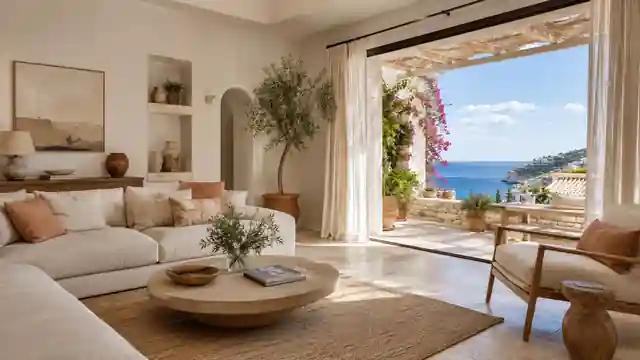
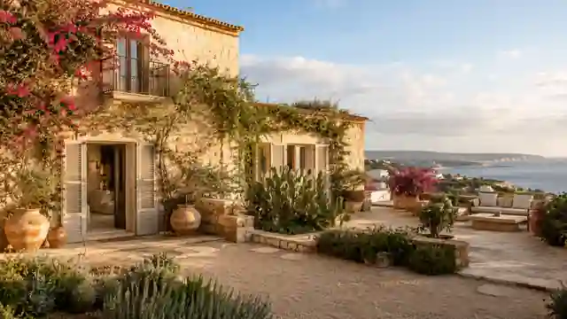

01
Ci affidi il tuo immobile
Verifichiamo stato, documentazione, costi, potenziale e obiettivi del proprietario.
Ci affidi il bene. Lo prendiamo in consegna, lo prepariamo, lo rendiamo appetibile, lo mettiamo a reddito e gestiamo l'operatività quotidiana. Affitti brevi, case vacanza, manutenzioni, fiscalità, rendicontazione e supporto alla vendita quando serve.

Un unico referente coordina il bene, i professionisti, gli ospiti, gli adempimenti e i numeri. Tu intervieni sulle decisioni importanti.
Verifichiamo stato, documentazione, costi, potenziale e obiettivi del proprietario.
Organizziamo pulizia, piccoli lavori, allestimento, foto, forniture, manutenzioni e ciò che serve per presentarlo bene.
Definiamo pricing e canali. Privilegiamo short term e holiday rental, usando anche altri modelli quando sono più adatti.
Seguiamo ospiti, incassi, spese, scadenze, manutenzioni e report. Il proprietario vede cosa accade.
Short term, holiday rental, stagionale, long term o supporto alla vendita. Scegliamo la strada più adatta al bene.
Allestimento, pulizia, arredi, biancheria, fotografie e piccoli interventi per aumentare attrattività e usabilità.
Annunci, pricing, richieste, check-in, check-out, assistenza e coordinamento delle attività legate ai soggiorni.
Organizziamo tecnici, artigiani, giardinieri e controlli periodici. Verifichiamo l'esecuzione degli interventi.
Seguiamo pagamenti e adempimenti relativi alla proprietà, coordinandoci con professionisti abilitati quando necessario.
Possiamo coordinare preventivi, tecnici, imprese, fornitori, avanzamento e consegna del lavoro.
Ricavi, costi, interventi, documenti e stato del bene devono essere leggibili e verificabili dal proprietario.
Se il proprietario decide di vendere, prepariamo il bene e coordiniamo il processo con i professionisti abilitati.
Vivere Property Management nasce con una componente digitale forte. Vogliamo dare a ogni proprietario una vista completa del proprio immobile, anche quando vive a migliaia di chilometri di distanza.

È uno dei casi per cui Vivere Property Management è pensata. Diventiamo il tuo referente operativo sul territorio e ci occupiamo di ciò che normalmente richiederebbe la tua presenza.

Prima puntiamo a far sostenere all'immobile i propri costi. Tasse, manutenzioni, giardino, utenze e gestione. Poi lavoriamo per generare un risultato netto per il proprietario. Il nostro modello economico può prevedere uno share dei risultati, definito in funzione del bene e del servizio.
Possiamo partire da una prima valutazione dello stato del bene, dei costi attuali e del suo potenziale nel mercato degli affitti brevi o in altri modelli di utilizzo.